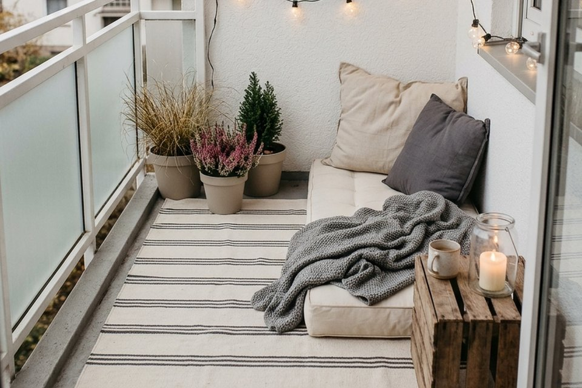

Balkon-Makeover für 100 €: Einkaufsliste & Kosten
Ohne Tisch, ohne Stühle – und trotzdem der gemütlichste Platz der Wohnung. Die Idee: eine Boden-Lounge aus Teppich, Kissen und Licht. Das passt auf jeden kleinen Balkon, braucht keine Bohrlöcher und kostet rund 100 €.
So geht's in 5 Schritten
1. Ein großer Outdoor-Teppich
Er ist die Basis der Lounge. Lieber eine Nummer größer, damit fast der ganze Boden bedeckt ist – dann wirkt der Balkon wie ein Zimmer. Streifen in Creme und Anthrazit lassen ihn länger wirken.
2. Bodenkissen und eine Sitzauflage
Eine lange Sitzauflage an der Wand und zwei große Kissen als Rückenlehne. Wetterfeste Bezüge nehmen und abends in eine Box oder nach drinnen räumen. Eine grobe Strickdecke macht es auch im Herbst gemütlich.
3. Eine Holzkiste als Tisch
Eine umgedrehte Obstkiste aus Holz ist Beistelltisch und Stauraum zugleich. Neu im Baumarkt oder gebraucht für ein paar Euro – einmal mit Holzöl streichen, dann hält sie draußen länger.
4. Eine Solar-Lichterkette
Warmweiße Lichterkette mit Solarpanel oder Akku: keine Steckdose, kein Kabel durchs Fenster. Mit Kabelbindern oder Klebehaken an der Wand befestigen. Dazu eine Laterne mit LED-Kerze auf der Kiste.
5. Drei Pflanzen als Gruppe
Ein Ziergras, eine Heide und eine kleine Zwergkonifere in schlichten Töpfen, eng zusammen in die Ecke gestellt. Alle drei sind winterhart und sehen bis ins Frühjahr gut aus. Mehr Arten: 8 winterharte Balkonpflanzen.
Einkaufsliste
| Was | Menge | ca. Preis |
|---|---|---|
| Outdoor-Teppich, ca. 120 × 180 cm | 1 | 20–35 € |
| Sitzauflage + 2 Kissen, wetterfest | 3 | 25–45 € |
| Strickdecke | 1 | 10–20 € |
| Holzkiste | 1 | 5–15 € |
| Solar-Lichterkette, warmweiß | 1 | 10–20 € |
| Laterne + LED-Kerze | 1 | 8–15 € |
| Ziergras, Heide, Zwergkonifere mit Töpfen | 3 | 20–35 € |
Richtwerte für Deutschland, Stand November 2026. Die Preise schwanken je nach Händler und Saison.
Was kostet das Makeover?
Günstig – ca. 100 €: alles aus der Liste mit einfachen Modellen (zusammen ca. 98–185 €, mit günstigen Teilen um 100 €).
Noch günstiger – ca. 60 €: Teppich, Kissen und Lichterkette. Die Pflanzen später dazukaufen.
Tipp: Im Herbst und Winter gibt es Outdoor-Teppiche und Kissen oft im Sale. Pflanzen dagegen im Frühjahr kaufen, wenn die Auswahl am größten ist.
Häufige Fragen
Werden Kissen draußen nicht nass?
Wetterfeste Bezüge halten einen Schauer aus, aber keine Nacht im Regen. Eine kleine Auflagenbox oder ein Platz im Flur löst das Problem.
Und wenn ich doch einen Tisch möchte?
Dann ist ein Klapp-Bistroset die nächste Stufe – siehe das Makeover in 8 Schritten. Für sehr schmale Balkone: 7 Ideen unter 1 m Tiefe.